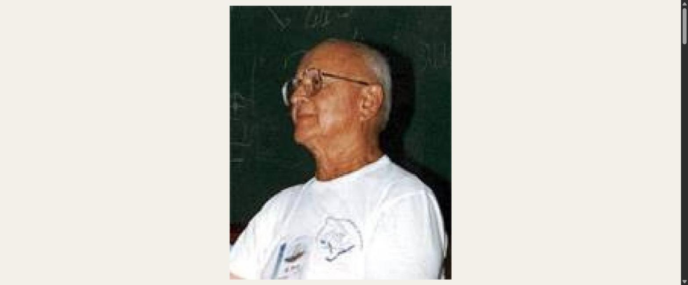
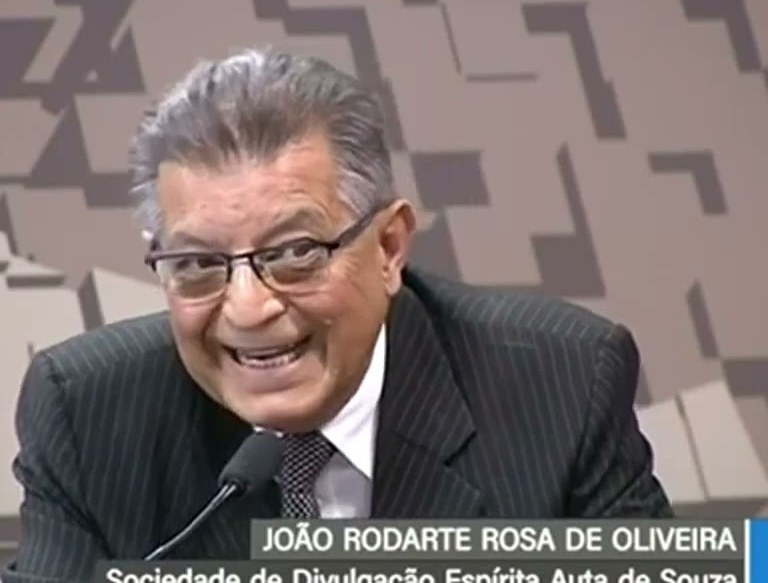

A Campanha de Fraternidade Auta de Souza
O movimento que deu origem a esta casa, e que ainda hoje é o seu domingo: levar a Doutrina Espírita e o Evangelho de Jesus de lar em lar — e voltar com o que for preciso para quem tem fome.
Em 1953, na Federação Espírita do Estado de São Paulo, Nympho de Paula Corrêa fundou uma campanha de divulgação. Por orientação recebida através do médium Francisco Cândido Xavier — informando que o espírito de Auta de Souza dirigia aquela atividade no plano superior —, o trabalho passou a se chamar Campanha de Fraternidade Auta de Souza.
Dois objetivos, desde o primeiro dia, e nunca separados:
- Divulgar a Doutrina Espírita de lar em lar, por meio de visitas e da entrega de mensagens impressas.
- Arrecadar donativos para as famílias carentes assistidas pelos centros espíritas.
É a fórmula inteira da casa em duas linhas: a palavra e o pão andam juntos. Quem bate na porta leva uma mensagem e volta com uma cesta — e é por isso que, aqui, divulgação e caridade nunca foram duas coisas.
Pelas mãos de Chico Xavier, o plano superior externou por diversas vezes seu incentivo à Campanha, por meio de espíritos como Bezerra de Menezes, Emmanuel e a própria Auta de Souza.
Uma mensagem na mão, um alimento no braço.
A doutrina que não desce a escada não chegou a lugar nenhum.
O domingo da casa ainda é o dia da Campanha — arrecadação e distribuição que sustentam a assistência da semana seguinte.
Os dois nomes que a casa guarda
Uma instituição de quarenta anos é feita de gente que já não está aqui para ser agradecida. Estes dois, a casa não deixa esquecer.

Nympho de Paula Corrêa — fundador da Campanha, da Concafras e desta casa.
Seu Nympho
Nasceu em Poconé, Mato Grosso, em 19 de julho de 1918. Em 1937 incorporou-se ao Exército Brasileiro e foi servir em Campo Grande, onde conheceu o senhor Tito José Inácio, espírita, com quem conversava sobre a doutrina. Ali também conheceu a jovem Maria do Carmo, com quem se casou em 5 de junho de 1943.
Em 1944 já era trabalhador do Centro Espírita Discípulos de Jesus, e assumiu depois a direção do Centro Espírita Castro Alves, onde realizava, ao lado de Oli de Castro, a Campanha do Quilo. Mudou-se para São Paulo em 29 de abril de 1952 e tornou-se conselheiro da Feesp.
Em 1953 fundou a Campanha. Em março de 1957, com outros confrades, a primeira Concentração das Campanhas — depois Concafras. Em 1985, já em Brasília, fundou em Taguatinga a Sociedade de Divulgação Espírita Auta de Souza. E em 1986, porque a Concafras acontecia uma vez por ano e as Campanhas precisavam de mais, criou os Encontros Fraternos Auta de Souza (EFAS).
Um trabalhador fiel ao Cristo que, depois de vencer as adversidades de uma existência longa, cumpriu com humildade o seu papel — e virou exemplo para todos os que o conheceram.

João Rodarte Rosa de Oliveira representando a Sociedade de Divulgação Espírita Auta de Souza em audiência no Senado Federal.
Seu João Rodarte
João Rodarte Rosa de Oliveira pertence à geração que recebeu de Seu Nympho um trabalho começado e teve a tarefa mais ingrata de todas: a de continuar. Fundar é o que se conta; sustentar é o que se faz.
Foi disso que ele cuidou — domingo após domingo, na divulgação de lar em lar, nos encontros, na formação dos que vieram depois. E levou o nome da casa aonde ele precisava chegar: sentou-se diante do Senado Federal para falar em nome da Sociedade de Divulgação Espírita Auta de Souza, com a mesma naturalidade com que atendia uma família na triagem de segunda-feira.
Quem trabalha ao lado dele reconhece o traço: fala rindo, não levanta a voz e não larga o serviço. É essa a herança que a casa procura não perder.
Fora da caridade não há salvação.Allan Kardec · a frase que a Campanha carrega de porta em porta
Concafras e EFAS
Da Campanha nasceram os dois grandes encontros do movimento espírita brasileiro que esta casa ajudou a criar — e que continua realizando todos os anos.